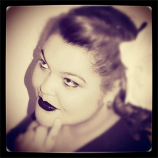

Number
5ASS
Favorite Position
Blocker
Quote
"Don't mess with my sass!"
When did you join?
January 2011
When was your first bout?
May 21, 2011
What's one of your long term derby goals?
To Become a PSJ (plus size jammer)
Where do you see your team in 5 years?
Owning our own rink and being well known in the derby world.
What's your favorite roller derby memory?
Wining our very first bout as a team. REDEMPTION!
What's your favorite thing about roller derby?
Asside from the love I have acquired of the sport, the friendship I have made. The people that I have met are truly amazing.
What's your least favorite thing about roller derby?
The terrible stench I carry around after wearing my pads.
What skates and equipment are you using?
Antiks with psycho 88's/ 187 killer knee and elbow pads
Biography:
I started my new year off right in 2011 by attending IMRG's very first fresh meat night and was automatically intrigued. My interest and love for the sport only grew from that moment. Like most women that play the sport I lead a very busy life outside of derby. My real name is Jade and I am currently a sophomore in college majoring in Human Services but I also work as a geriatric nursing assistant at Allegany Health Nursing and Rehabilitation Center. After finishing school I hope to one-day work as an activities director at a nursing home or an adult daycare center. My true dream though is to own my old adult daycare center where I believe I can truly use my love for geriatric care and helping people to put the care of people's loved ones at ease. When I'm not working, going to school or doing the many things that are involved with derby, I love to go out dancing with my friends, reading, singing in the shower, and trashy reality television shows. Even though my life before derby was great, it was forever changed the moment I nervously walked into the Salvation Army gym and placed my eyes on a misfit group of girls known as the Iron Mountain Roller Girls. These girls have slowly become my sisters and some of my life's greatest memories have include them, it is amazing to know I have numerous friends that I can comfortably go to with various questions ranging from "does my hair look okay?" to "on a scale of one to corn chips how bad does my gear smell?" I want to end this ever so cheesy rant by saying thank you for visiting my profile; I hope you enjoyed reading it as much as I enjoyed writing it, and GO IMRG!